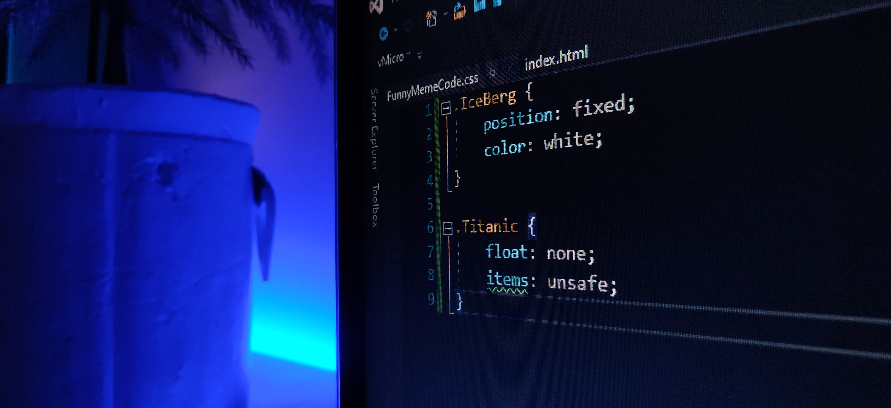

Frivillig programmering för alla som vill!
Träff varje onsdag kl 15:00 i sal 325 om
Dagar
Timmar
Minuter
och
Sekunder
Är detta för dig?
Är du intresserad av programmering eller vill lära dig mer om digitaliseringen i världen? Alla är välkomna till NTI-Johannebergs programmeringsklubb oavsett om du är nybörjare eller veteran inom programmering.
Vi bjuder på fika, hjälp om det behövs och gött häng. Dessutom finns det många intressanta övningar och problem som kommer förbereda dig inför programmeringskurserna inom skolan.